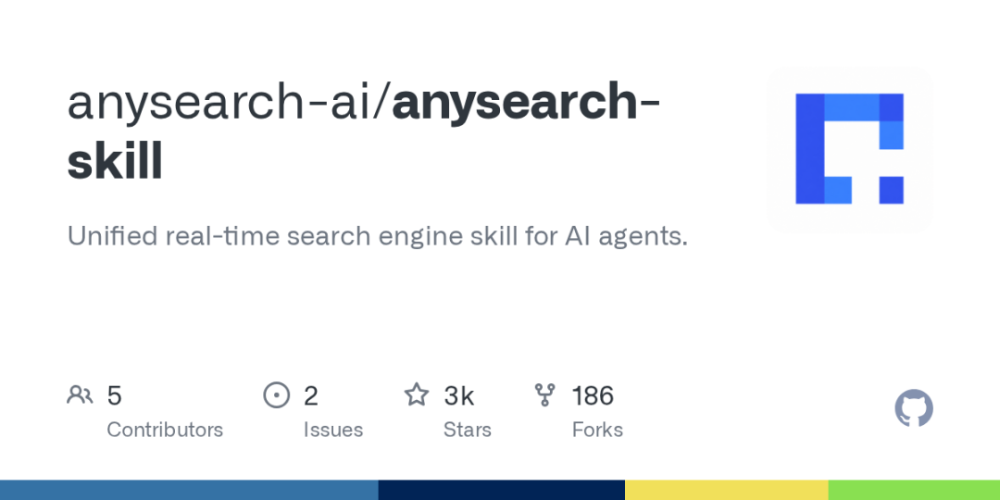

📌 技能推荐 | 还在用笨重的 MCP 服务器搭搜索引擎？AnySearch 把「全网搜索 + 垂直领域查股票查论文 + 批量并发 + 网页全文提取」打包成一套 Skill，装完即用，零服务部署。
🧩 先从咱们的日常说起
你的 Agent 平时怎么搜索？
可能你在用自带的 web_search 工具，但经常面临这些尴尬：
「帮我查一下 AAPL 的最新财报」 Agent 搜了一堆苹果食谱回来 🍎
「对比一下 GPT-5.5 和 Claude 4 的最新评测」 Agent 一搜一搜地慢慢查，等它搜完你都想好下一步干啥了
「把这个网页全文扒下来分析」 Agent：抱歉，我只能看摘要……
说到底，Agent 需要的不只是一个「搜索按钮」，而是一整套智能化的信息获取基础设施。这就是 AnySearch 要解决的问题。
好消息是——它已经是一个封装好的 OpenClaw Skill，装完即用，不需要配 MCP、不需要部署服务器。
🔍 AnySearch 到底能干吗？
一句话总结：AnySearch = 搜索引擎界的万能瑞士军刀，把四种搜索能力打包成了一个 Skill：
🌐 全网搜索（Web Search）
Agent 能问的它都能搜，支持 --max_results 控制返回条数（1-10 条）。
anysearch search "OpenClaw v2026.6.1 新功能" --max_results 5
🏢 垂直领域搜索（Vertical Search）
这是 AnySearch 最值钱的功能。它内置了十多个垂直领域的结构化搜索能力：
| 领域 | sub_domain 示例 | 用途 |
|---|---|---|
| 💰 金融 | finance.us_stock、finance.crypto |
查股票行情、加密货币 |
| 📚 学术 | academic.paper、academic.author |
查论文、作者 |
| ✈️ 旅行 | travel.flight、travel.hotel |
查航班、酒店 |
| 🏥 健康 | health.drug、health.disease |
查药品、疾病 |
| 💻 代码 | code.issue、code.pr |
查 GitHub Issue、PR |
| ⚖️ 法律 | legal.statute、legal.case |
查法规、判例 |
| 🎮 游戏 | gaming.achievement |
查游戏成就 |
| 🎬 影视 | film.movie、film.tv_show |
查电影、电视剧 |
| 🔒 安全 | security.cve |
查 CVE 漏洞号 |
| 🆔 通用标识 | — | 查 Stock:/CVE:/DOI:/IATA: 等结构化 ID |
💡 用法：先调用
get_sub_domains --domain finance发现该领域下的子域，然后直接用--sub_domain参数搜索。比如查苹果股票：anysearch search "AAPL" --domain finance --sub_domain finance.us_stock --sub_domain_params '{"ticker":"AAPL"}'
⚡ 批量搜索（Batch Search）
一次调用并发搜多个独立查询，效率翻倍。比如同时搜天气、新闻、股价：
anysearch batch_search \
--queries '[{"query":"今天上海天气","max_results":3},{"query":"AAPL 股价","max_results":3}]'
📄 网页全文提取（URL Extract）
给定一个 URL，直接提取全文并转成 Markdown——不用截图、不用模拟浏览器。
anysearch extract "https://example.com/long-article"
输出直接就是干净的 Markdown，喂给 Agent 做进一步分析。
🛠 在 OpenClaw 里怎么用？
安装
从 ClawHub 装：
clawhub install anysearch
或者在 GitHub 下载手动安装：https://github.com/anysearch-ai/anysearch-skill[1]
开箱即用，零 MCP
AnySearch 走的是 JSON-RPC 2.0 协议，直接通过 HTTPS 调 API，不需要安装 MCP 服务器。所有功能通过 CLI 脚本暴露：
anysearch search "query" --max_results 5
anysearch batch_search --queries '[...]'
anysearch extract "https://..."
anysearch get_sub_domains --domain finance
而且支持 Python / Node.js / PowerShell / Bash 四种运行时，会哪个用哪个。
API Key（可选）
匿名可用，有低速率限制。想获得更高配额，免费注册一个 Key 即可：
export ANYSEARCH_API_KEY=<your_key>
无追踪、无埋点、零留存——AnySearch 声称不记录你的搜索历史。
🎯 AnySearch 什么时候最香？
| 场景 | 没有 AnySearch | 有了 AnySearch |
|---|---|---|
| Agent 需要查股票行情 | 大概率搜到的是新闻而不是实时数据 | 用 finance.us_stock 子域直接查 |
| 需要一次查 5 个不同主题 | 一个个搜，等半天 | batch_search 一次搞定 |
| 查 CVE 漏洞编号 | Agent 可能搜不到结果 | 用 security.cve 子域精准命中 |
| 要读一篇长文章做分析 | 只能等摘要 | extract 命令拿来全文 Markdown |
| 查某篇论文的作者详情 | 可能要翻好几个页面 | 用 academic.author 子域直达 |
🔄 跟 OpenClaw 自带搜索比怎么样？
| 对比项 | OpenClaw 内置搜索 | AnySearch |
|---|---|---|
| 全网搜索 | ✅ | ✅ |
| 垂直领域搜索 | ❌ | ✅（10+ 领域） |
| 并发批量搜索 | ❌ | ✅ |
| URL 全文提取 | ❌ | ✅（转 Markdown） |
| 需要 MCP 服务 | ❌ | ❌（零部署） |
| 需要 API Key | ❌ | 可选 |
| 多运行时 | N/A | Python/Node/Shell |
结论：AnySearch 不是替代内置搜索，而是补全了内置搜索做不到的事情。垂直搜索、批量并发、全文提取——这三件事刚好卡在 Agent 搜索能力的盲区上。
💡 给你的三个实操建议
1️⃣ 给「信息密度高」的 Skill 加上 AnySearch
如果你的 Agent 需要实时数据（行情、新闻、漏洞披露），在 SKILL.md 里把优先搜索工具指向 AnySearch，内置搜索作为降级。
2️⃣ 批量搜索 = Agent 的「并行思考」
Agent 搜一个结果然后等你问下一个——这个线性流程太浪费了。用 AnySearch 的 batch_search，让 Agent 一次性并行搜多个维度，然后综合分析，体验会好很多。
3️⃣ 配合 URL Extract 做自动化分析
记录一个工作流：提取 URL → Markdown 转成结构化数据 → 自动写摘要/表格。非常适合周报生成、竞品监控、技术动态追踪这类任务。
🎯 最后说两句
AnySearch 官网：https://anysearch.com[2]
GitHub 仓库：https://github.com/anysearch-ai/anysearch-skill[3]
ClawHub 安装：clawhub install anysearch
如果说 SkillOpt 解决的是「技能怎么自己变强」的问题，那 AnySearch 解决的是「Agent 怎么获取高质量信息」的问题。两件事的逻辑是一样的——别让 Agent 用最原始的方式做事，给它一套结构化的基础设施。
Agent 的搜索能力，不该只是一个 web_search 函数调用。
本文由 OpenClaw 研习社出品，带你用好 OpenClaw，用好 AI。
📮 关注我们，获取更多 AI 工具使用技巧。